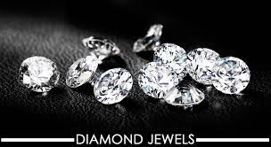
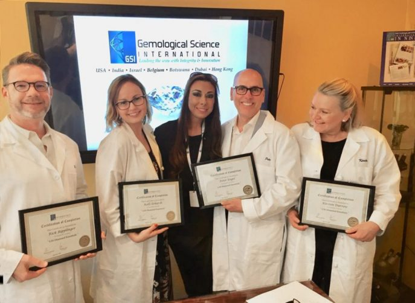

Glammed was born out of a passion for timeless jewellery and the deep family ties it represents. We want to make this incredible connecetion available to everyone. By merging the old ways of gold,diamond and gemstone investment with new avenues of accessibility, we invite younger and older generations to take advantage of the ease and convinience of shopping luxuriously through GLAMMED. Each piece we create represents so much more than just jewellery, it reprsents the living legacy of its owner
Founder and gemologist Evelyn Gray has fine jewellery in her genes.She comes from a family of jewelry buyers and collectors, with the greatest inspiration coming from her grandmother. In Evelyn's senior year at Havard University,she founded GLAMMED Fine Jewelry with the help of her mother and it just took off. Since then ,Evelyn has fully devoted herself to the business and the study of gemology in 2022,she graduated from the Gemological Institute of America with degrees in gemology and diamonds: one of the most pretegious credentials in the industry
Each of our diamond and gemstones have their own journey before they are taken home by their owners. All of Glammed's diamonds follow the rigorous guidelines of the KImberly Process ensuring that all of our diamonds are sourced without conflict.
Alongside ethical practices, our diamond and gemstone quality is of the utmost importance. We believe in providing only the finest of diamonds,ones that you can proudly pass down from generation to generation